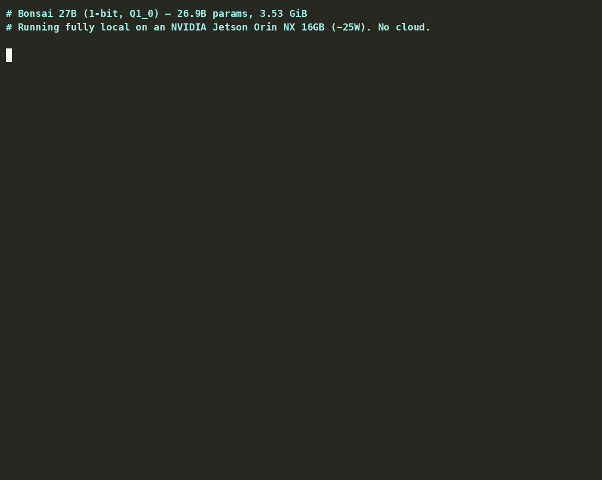

We said this model had no GGUF path. A palm-sized Jetson board proves that's now half true.
PrismML's Bonsai 27B shipped in July as MLX-only — no GGUF, no conversion path, a real wall we wrote about at the time. Three weeks later, GitHub user duddnr0719 is running a 26.9-billion-parameter, 1-bit build of it on a Jetson Orin NX 16GB — a board the project's own README calls "palm-sized" — at 6.76 tokens a second on roughly 25 watts, over a route mainline llama.cpp still can't read.
Edge in the Wild is our occasional spotlight on real builders running AI on hardware they own. This one: bonsai-27b-jetson, MIT-licensed setup scripts and docs over an Apache 2.0 model, published July 22, 2026.

What actually changed since July
The gap we flagged in July wasn't a rumor — it was accurate at the time. What closed it wasn't a mainline llama.cpp update; it was PrismML themselves publishing a second model card, prism-ml/Bonsai-27B-gguf, alongside a private fork of the engine at PrismML-Eng/llama.cpp that adds the custom kernels needed to read it. The card describes the GGUF Q1_0 pack as the model's "native layout" — the binary weights aren't expanded back toward full precision to fit a generic format, the on-disk size and the deployed size match. That's consistent with what we wrote in July: Bonsai isn't a big model quantized down after the fact, it's trained natively at 1.125 bits per weight, and the GGUF release keeps that property rather than undoing it.
The catch, and it's the one that keeps this out of privateSLM's own catalog: the fork's README is explicit that its Q1_0_g128 (group-128) kernels are a private, non-standard extension — a model saved this way "won't load on standard llama.cpp," their words, not ours. It's a real GGUF file now, sitting on Hugging Face under Apache 2.0, and it still fails our engine-compatibility gate for exactly the reason every architecture-gate post on this blog exists: our build fetches mainline ggml-org/llama.cpp, and mainline doesn't recognize this quantization scheme. The July irony softened; it didn't resolve.
What duddnr0719 actually built
The repo is a guide plus setup scripts for running the 1-bit Bonsai release on a Seeed reComputer Orin NX 16GB (J401), on JetPack 6.2.1 / L4T r36.4.3, CUDA 12.6, with the board in MAXN power mode — a genuine palm-sized edge box, not a desktop GPU rig, running a model in the same weight class as several frontier open releases.
| Metric | Value |
|---|---|
| Parameters | 26.9 billion |
| Quantization | 1-bit, custom Q1_0_g128 |
| On-disk size | 3.53 GiB |
| Context window | 262,144 tokens |
| Prompt processing | 128.94 tok/s |
| Token generation | 6.76 tok/s |
| Power draw | ~25 W |
Source: github.com/duddnr0719/bonsai-27b-jetson README, cross-checked against PrismML's own Bonsai-27B-gguf model card (~3.8 GB for the 1-bit Q1_0 file, consistent with the 3.53 GiB figure above).
The builder is candid about where 1-bit compression shows its seams — the same honesty we'd want from our own catalog copy. The README states plainly: "1-bit quantization is extreme compression," and that "non-English output (e.g. Korean) sometimes mixes in tokens from other languages or gets technical terms wrong," recommending PrismML's larger ternary build (5.9 GB in the original model card, listed around 7.2 GB in this fork's packaging) for non-English production use. That's a specific, falsifiable claim about a specific failure mode — not a vague disclaimer — and it matches the pattern we found in PrismML's own July benchmark table, where Bonsai's 1-bit build held 89.5% of full-precision quality in aggregate but didn't hold it evenly across every category.
Why this is still the extreme end, not the mainstream path
duddnr0719's profile shows this isn't a one-off: other repos there run a GRPO-tuned Qwen2.5-3B for IoT anomaly detection on a Jetson Orin Nano, and a tuberculosis-screening model, also on Jetson hardware — a builder specifically working the edge-AI-on-Jetson niche, not someone who stumbled into one viral repo. That context matters for how much weight to put on the numbers: this is a maintained, repeat pattern from someone who has reason to get the details right.
What it doesn't do is change the compatibility math for an app like ours. Running Bonsai 27B today means compiling a private fork most users will never touch, on hardware with a dedicated NVIDIA GPU and 16 GB of RAM to spare — a genuinely different device class from a phone, and a genuinely different install process from tapping a download button in a catalog. The 6.76 tokens/second figure is real and it's a meaningful result for a 27B-class model on a device this size, but it's also 25 watts and a command line away from "runs in an app," not a straight line to one.
Source / credit: Bonsai 27B is PrismML's model, Apache 2.0, first covered on this blog on July 18. The Jetson build is the independent work of GitHub user duddnr0719, MIT-licensed, at github.com/duddnr0719/bonsai-27b-jetson. Demo GIF is the project's own.
Discuss this on the forum → — running anything at 1-bit on your own edge hardware? Tell us what broke and what didn't.